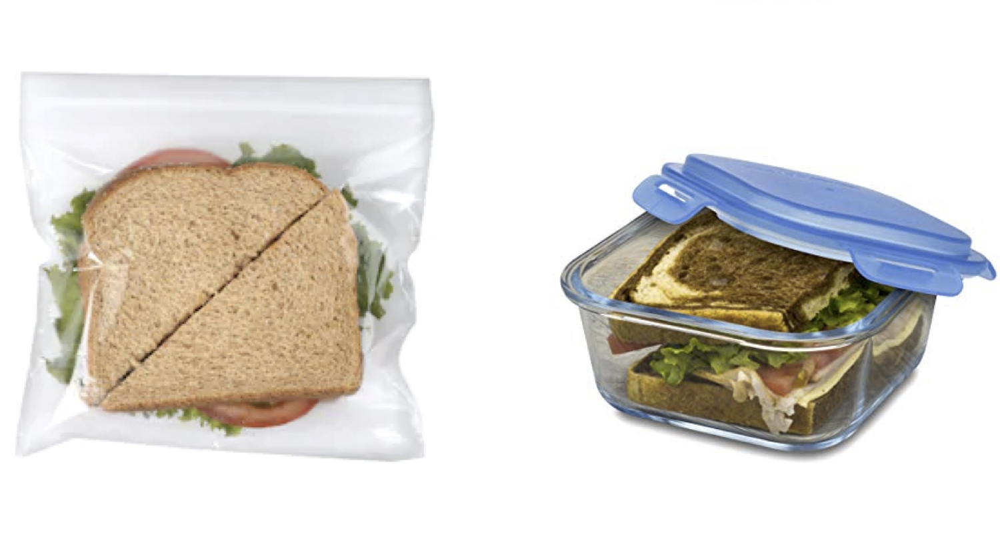

Switch to a reusable bag! Plastic bags are used on average for only 15 minutes!
Get reusable, bamboo cotton pads! Bamboo is a very sustainable resource since it grows very quickly! Throw them in the wash, and they can be used hundreds of times. They will also pay off and become cheaper and pay off in only a month

Shop at local farmers markets! Support local businesses, and less produce is wrapped in plastic. Bring a reusable bag with you to get the produce.
Start using a reusable container for your lunch! Less trash to throw away, and no need to buy plastic bags every time you're at the store, because these containers can last for years!
Buy all natural shampoo and skincare! If that's not possible, make sure to buy shampoo, soaps, and body scrubs in bulk and WITHOUT polyethylene (PE) or polypropylene (PP), polyethylene terephthalate (PET), polymethlyl methacrylate (PMMA) or nylon! These are all plastics that end up in the water.
Start using and bringing metal straws with you! Americans use 500 million plastic straws daily. Help stop this insane amount of waste!
Start to use reusable towels! They will also prevent time shopping for paper towels, and you can spend more time shopping for other produce
Buy yourself a reusable bottle! The average person would save $2,980 a year with a plastic water bottle!